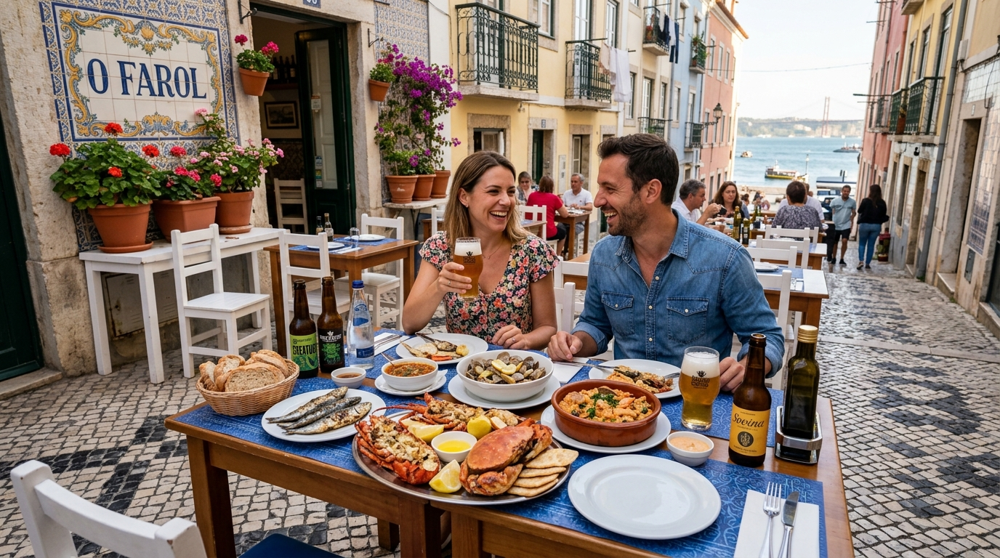
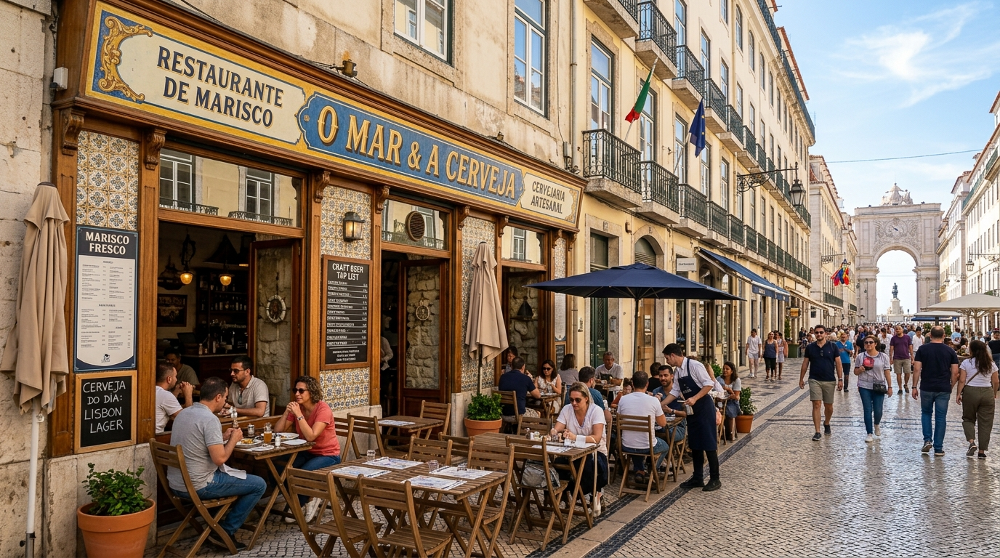
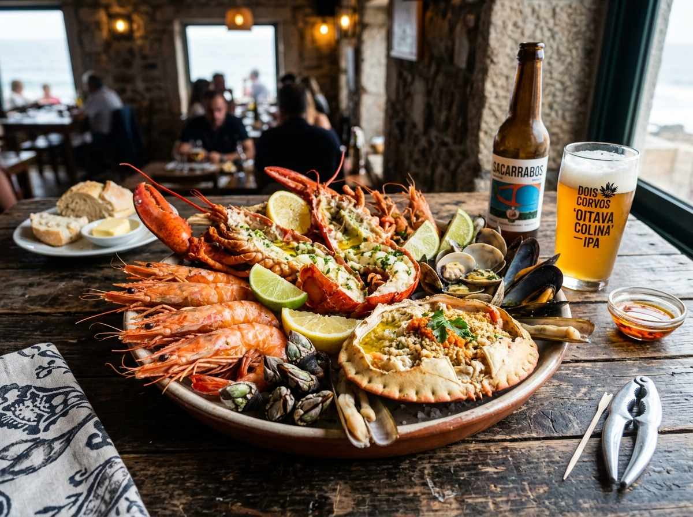
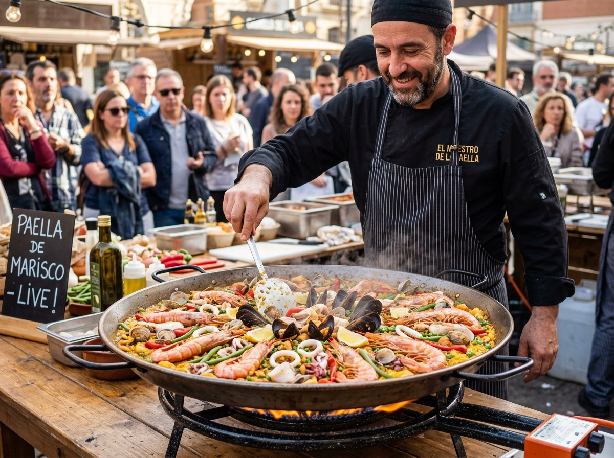
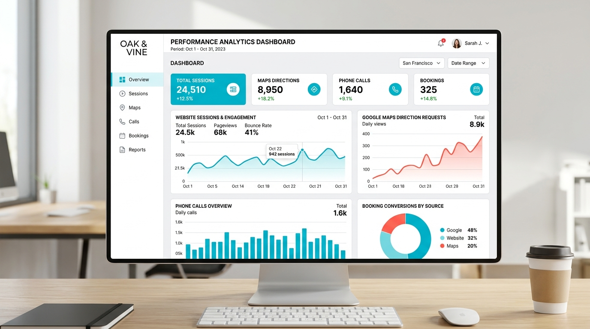

Uma estratégia personalizada de Google Ads e Google Meu Negócio para captar turistas e locais na Baixa de Lisboa — transformando pesquisas por marisco fresco, paellas ao vivo e cerveja artesanal em mesas cheias na Rua Augusta.
Onde o melhor do mar e as cervejas artesanais se sentam à mesa na Rua Augusta
Sapateira recheada artesanal, lagosta, camarão da costa e mariscadas completas preparadas diariamente com a frescura do oceano Atlântico.
Paella de marisco confecionada ao vivo em frigideira gigante na esplanada. Uma atração gastronómica que chama a atenção de quem passa.
Seleção exclusiva de cervejas artesanais locais e nacionais, perfeitas para harmonizar com mariscos numa esplanada agradável na Baixa de Lisboa.



Análise detalhada da presença digital e oportunidades de crescimento do Gelo Augusta
A zona da Rua Augusta, Rossio e Terreiro do Paço tem dezenas de restaurantes a disputar turistas. Sem anúncios no topo do Google Ads, o Gelo Augusta depende da passagem a pé — perdendo centenas de clientes/mês que pesquisam "marisqueira lisboa" ou "best seafood near me" no telemóvel.
O perfil do Gelo Augusta no Google Maps tem boa reputação, mas faltam posts semanais com destaques da Paella ao vivo e pratos de marisco, além de respostas rápidas às avaliações. Restaurantes com perfil ativamente gerido no Google recebem 520% mais chamadas e pedidos de rota.
Mais de 80% dos turistas em Lisboa pesquisam no telemóvel "seafood terrace lisbon" ou "paella downtown" antes de escolher onde almoçar ou jantar. Campanhas geolocalizadas garantem que o Gelo Augusta seja a primeira opção a aparecer.
O conceito diferenciado do Live Cooking de Paella e da carta de Cervejas Artesanais tem enorme apelo em redes sociais e no Google, mas precisa de anúncios segmentados para atrair grupos, famílias e apreciadores de boa gastronomia marítima.
Estratégia integrada de Google Ads + Google Meu Negócio personalizada para o Gelo Augusta
Anúncios que aparecem exatamente no momento em que o cliente procura por marisco e cervejaria
Anúncios para buscas de alta intenção em Lisboa:
Anúncios no topo do Google Maps quando turistas e locais pesquisam por restaurantes na zona:
Anúncios específicos para captar quem busca experiências gastronómicas diferenciadas:
Maximizar a presença do Gelo Augusta no Google Maps e pesquisas locais
Upload semanal de fotos de mariscadas, paella ao vivo, esplanada e cervejas artesanais. Perfis com fotos atualizadas recebem +520% mais chamadas.
Publicações regulares de pratos do dia, eventos de Paella ao vivo e destaques de cervejas. Mantém a ficha ativa e no topo do ranking.
Resposta profissional a todas as avaliações em 24h. Estratégia ativa para captar mais avaliações 5 estrelas de turistas e moradores.
Otimização de categorias ("Seafood Restaurant", "Brewery", "Paella Restaurant"), menu completo, horários e atributos (Esplanada, Wi-Fi, etc).
Preenchimento de perguntas frequentes sobre reservas, pratos de marisco, menu de grupo e opções vegetarianas.
Relatório detalhado de chamadas, visualizações, pedidos de rota e comparação direta de crescimento mês a mês.
Projeções baseadas em dados do setor de marisqueiras e restauração na Baixa de Lisboa

Potenciais clientes a clicar nos anúncios quando pesquisam marisqueira e comida em Lisboa
Chamadas diretas de reservas via anúncios e perfil no Google Maps
Turistas e clientes a pedir direções via Google Maps até à Rua Augusta
Exposições da marca Gelo Augusta nas pesquisas de marisco em Lisboa
Configuração de campanhas, otimização do perfil Google Maps do Gelo Augusta e início das campanhas de marisco e paella.
Otimização por termos de busca mais rentáveis, aumento no volume de chamadas para reservas e pedidos de rota na Rua Augusta.
Campanhas com o menor custo por clique, fluxo constante de clientes na esplanada e retorno previsível.
* Cálculo: 80-160 novos clientes × €35 ticket médio = €2.800-€5.600 de receita adicional mensal. Com investimento total mensal de ~€800 (serviço) + ~€450-600 (ads), o retorno estimado é de 3.5x a 7x.
Transparência total — sem custos ocultos
Google Ads + Google Meu Negócio
Fee de gestão mensal + taxa única de implementação e configuração inicial (cobrada apenas no 1º mês)
O valor investido em publicidade é pago diretamente ao Google. Recomendamos para o Gelo Augusta:
Captação & Edição Profissional
Produção completa de conteúdo audiovisual para redes sociais
Produção feita com câmaras Sony e Canon, lentes Sigma e microfones de alta fidelidade para garantir a máxima qualidade visual e sonora do Live Cooking.
Ideias e roteiros focados nas especialidades da casa (Paellas ao vivo, sapateiras e cervejas artesanais), produzidos no dia mensal de captação.
+ investimento publicitário Google Ads (a cargo do cliente)
+ investimento publicitário Google Ads (a cargo do cliente)
Para garantir resultados consistentes e otimização contínua das campanhas e conteúdos do Gelo Augusta.
Acesso completo à conta Google Ads — tudo é vosso
Relatórios mensais com métricas claras de reservas e chamadas
Comunicação direta via WhatsApp para dúvidas e ajustes
Equipamento profissional Sony, Canon, Sigma & Hollyland
Cada dia sem uma estratégia de tráfego pago na Rua Augusta é um dia em que potenciais clientes estão a escolher outros restaurantes. Vamos mudar isso juntos.
⚡ Proposta válida até 30 de Setembro de 2026